什么是产品设计规范
产品设计规范是在长期设计中结合业务逻辑沉淀下来的一种设计习惯，产品规范有以下几个特点：
- 明确的逻辑范围。任何一种规范都有它对应的适用范围，一般都是从各个功能场景里，把反复被调用的交互逻辑，页面元素样式，业务场景等等沉淀出来用文档的形式输出。
- 明确的类型范围。常见的设计类型包括C端和B端，由于用户群提不同，产品规范的制定也不能一概而论。
- 明确的时间范围。产品设计规范往往不是一蹴而就完成的，需要在设计中收集整理业务场景中可复用的元素，但不是所有设计规范能在系统上线后就马上建立起来，尤其是在B端产品中，可以组件化的逻辑和样式绝对不是一两个需求就能沉淀出来的，B端产品体验设计师也很难根据经验和竞品分析就能想象出符合业务场景的交互逻辑和视觉样式，一定要了解业务逻辑积累业务场景才需要开始规范。
建立产品设计规范的意义
- 避免重复开发，节约研发成本。
- 标准化组织管理，提高跨部门协作能力，降低运营成本。
- 提高业务部门经营能力，迅速响应市场变化。
产品设计规范需要达到的效果
保证设计的一致性
对内部：多个设计师合作，依然能保证设计风格的统一，提高设计的效率。
对用户：提高用户体验，提高操作效率，加深对产品的记忆。提高开发效率和还原度
与前端有效沟通的工具，提高设计的还原度，降低对接成本。
开发可以建立公共组件库，极大的提高了开发效率。方便产品迭代，辅助设计和开发更好的完成设计的协作
产品设计结构规范
页面结构布局
Ant design 蚂蚁集团 获赞28.1k
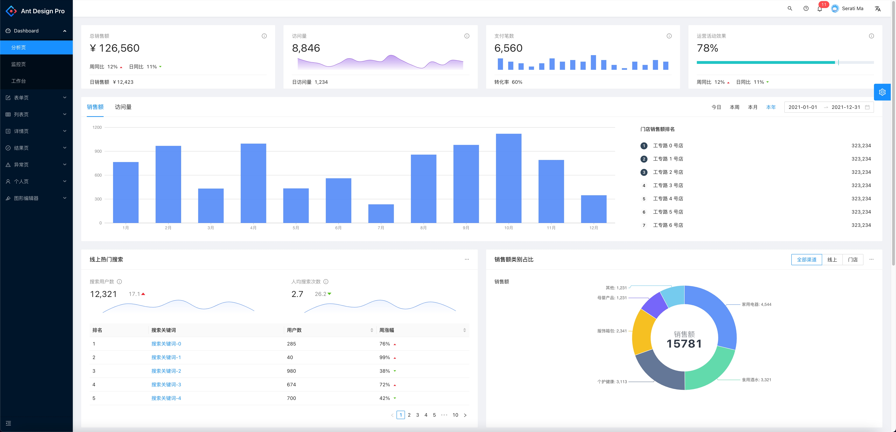
vue element-ui 获赞64.9k
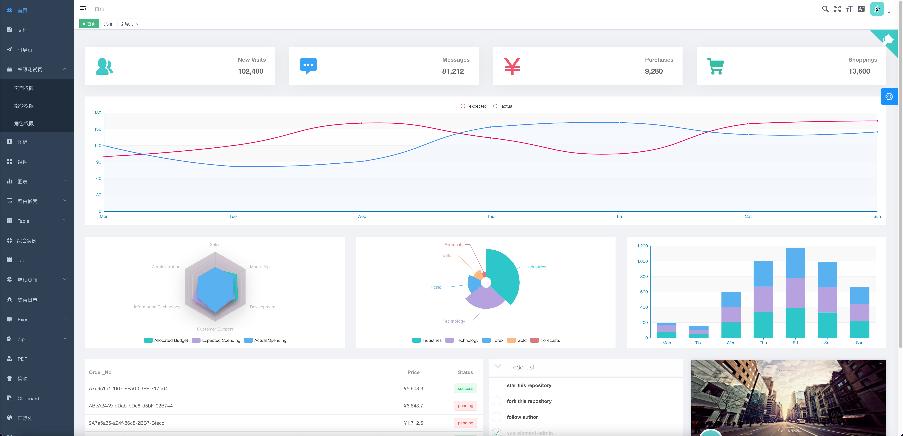
Tabler 获赞22.9k
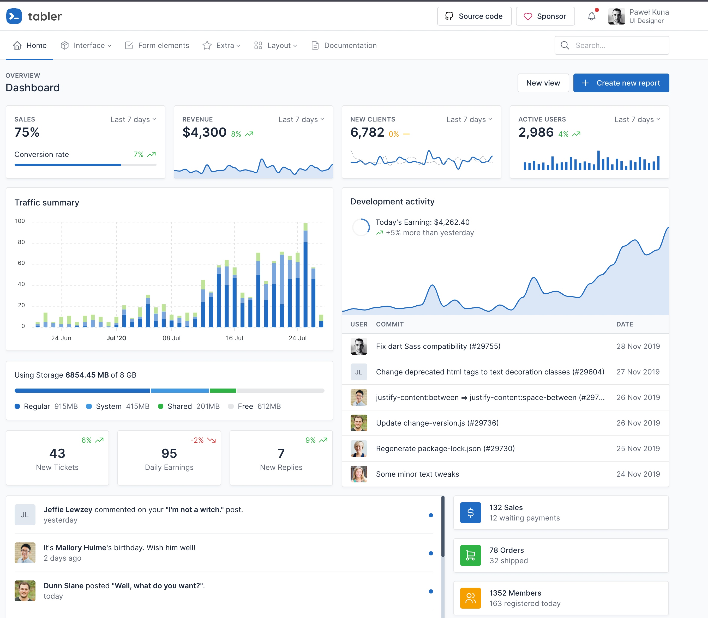
iView Admin 获赞15.5k
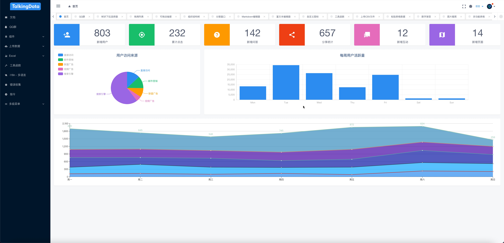基本元素
颜色、按钮、表格、表单、弹框、边框、间距、分割线、栅格等
Zan Design System
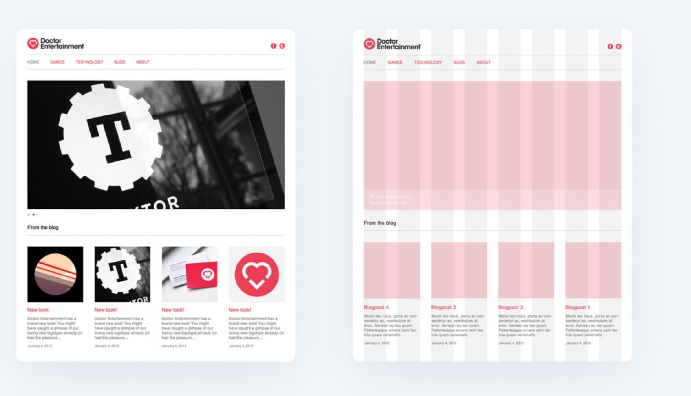适配不同的显示终端
目前电脑端主流适配的是1440x900的分辨率，我们由于受众较为单一可以统一成1920x1080（兼容1920x1200）。
移动端以我公司设备为主，同时兼容常见尺寸。
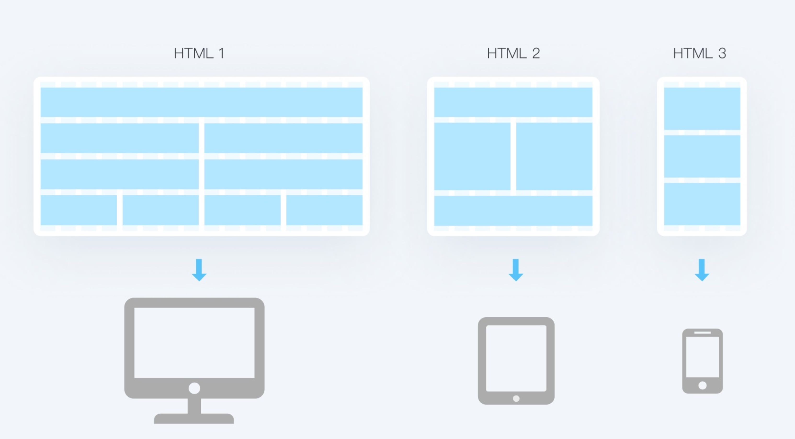数据可视化展示
准确：可视化设计表达时，精准如实反应数据的特征信息可用图、表格的形式展示。
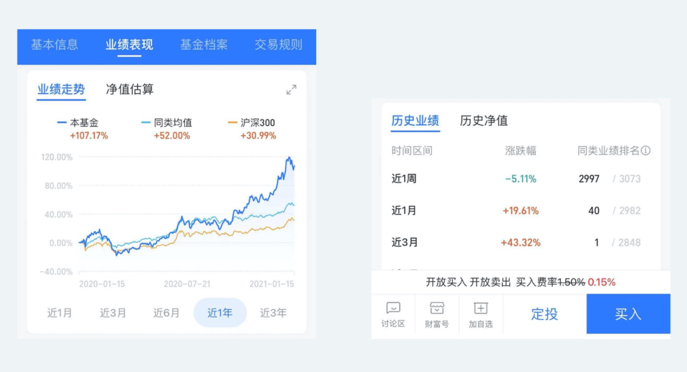
Apache ECharts
图说（百度旗下）
清晰：要做到结构清晰和内容清晰。
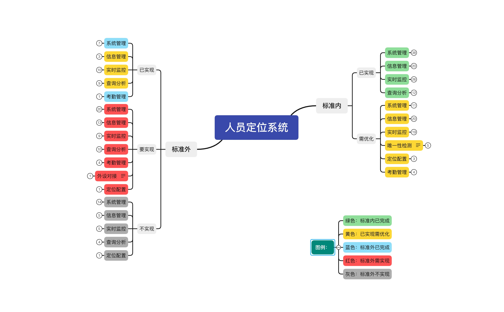
有效：传达重点重点信息，避免信息过载，找到用户需求痛点。
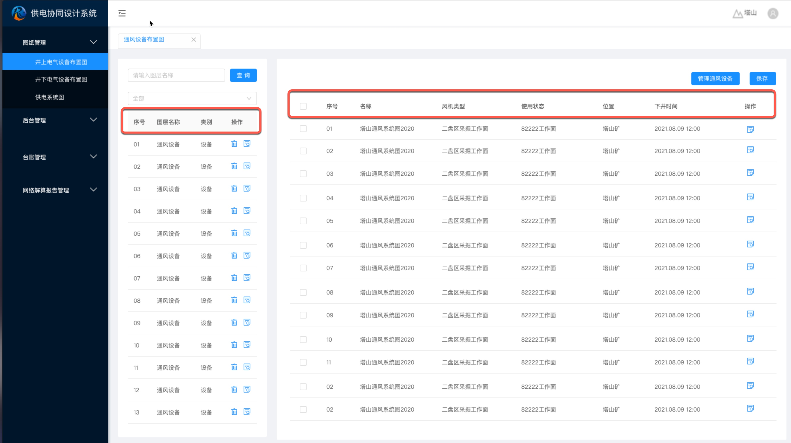
美观：合理的利用视觉元素进行去做设计，运用格式塔原理对数据进行分组，既能帮助用户更有效率的获取信息，也能在一定程度上建立一种秩序的美感、规律的美感。
产品设计流程及交互规范
符合随用随走原则
尽量减少必填项，尽量做到表单数据都可以延后补充。
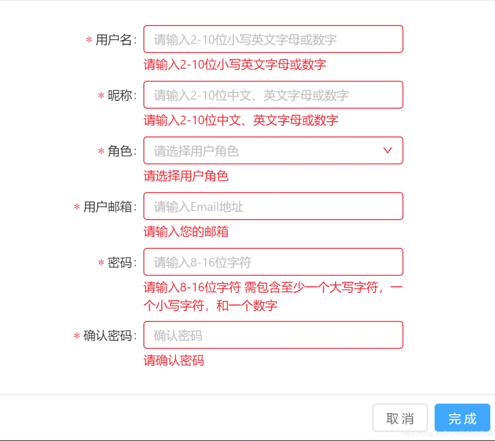
减少长时间停留在一个页面的逻辑，如需要输入或者展示的信息过长可采用分页或分组的方式组织结构。
掌握强逻辑与弱逻辑在业务流中的使用场景，该强则强，该弱则弱。
合理优化强提醒与弱提醒的使用场合。
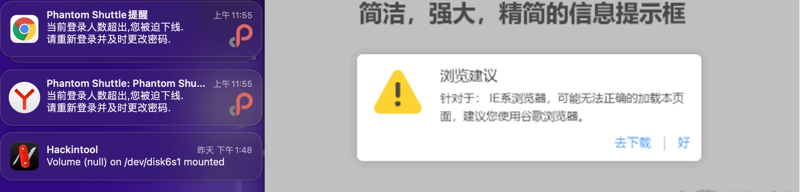
明确分类与用户职能，展示用户最关心的信息，减少操作深度。符合简化易用原则
明确子集与全集的概念，抽象通用方法解决问题。
强化功能细分，理论上使用频率大于1次的功能都需要封装。
功能为产品设计的最小夸克，各功能之间应尽量减少耦合度。
每个模块包含多个功能，模块之间相互独立，是系统运行的最小单元，应尽量减少系统运行的最小模块数量。
每个系统包含多模块，原则上每个模块不能属于多系统。系统间调用必须遵循统一的调用规范。符合逻辑闭环原则
有来就需要有回，基本要满足从哪来就回哪去，怎么来就怎么回去的原则
重点完善出错部分逻辑设计，解决系统流异常中断后交互与流程问题。
B端产品需要明确当前节点位置与操作路径。C端由于屏幕尺寸有限，结构设计相对扁平，可以使用进度条替代。
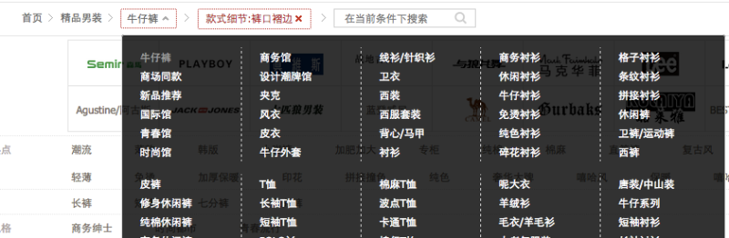符合提前预判原则
系统功能埋点，功能出现崩溃或异常应预先判断并通过邮件、短信等手段提醒运维人员。
用户使用习惯埋点，用于二次需求分析，逐步筛选用户真实需求。
建立功能模块出错后自动响应机制，软性系统故障自动修复，减少认为干预；硬性故障给出解决方案，通知相关人员现场操作。输出资料规范原则
业务属性思维导图（可选）
业务逻辑思维导图
系统及功能模块用例图
带交互的产品原型
需求规格说明书